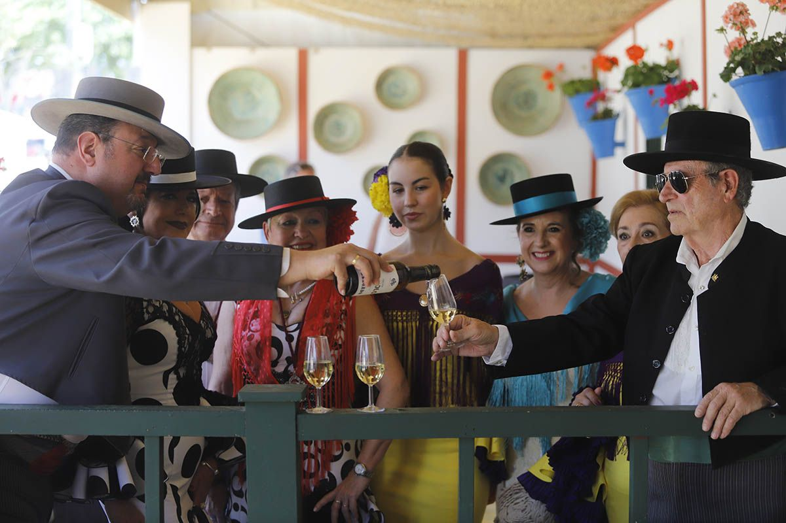
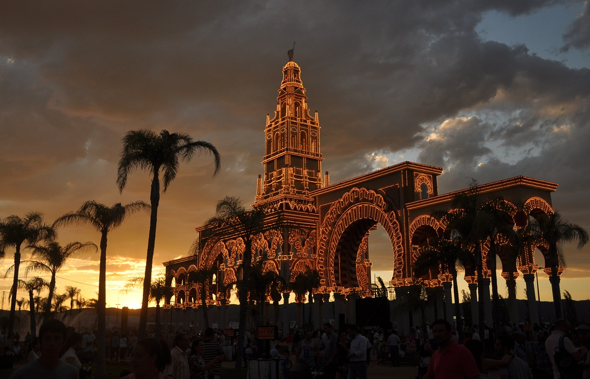

La Feria de Córdoba tiene sus raíces en el siglo XVI, cuando comenzó a celebrarse como una fiesta agrícola y ganadera, destinada a promover el comercio y la actividad económica de la ciudad. Su origen está vinculado al evento religioso en honor a la Virgen de la Salud, cuya festividad se celebraba en el mes de mayo. Sin embargo, no fue hasta finales del siglo XIX y principios del siglo XX cuando la feria comenzó a adquirir el formato actual, con un carácter más popular y festivo. Durante estos años, se introdujeron las casetas y los bailes flamencos, convirtiendo la feria en un evento socialmente significativo para la ciudad. Hoy en día, la Feria de Córdoba se celebra a finales de mayo, coincidiendo con el fin de la temporada de patios, lo que añade un toque especial a la festividad. La feria se desarrolla principalmente en el recinto ferial de El Arenal, donde se instalan las famosas casetas, donde se disfrutan de comidas, bebidas y música. Además, los paseos a caballo y en carrozas, las tradicionales sevillanas y la gastronomía local, con platos como el salmorejo y el flamenquín, son algunos de los grandes atractivos de esta festividad. La Feria de Córdoba, que dura una semana, es un escaparate de la rica cultura andaluza, en la que la tradición y la modernidad se combinan para ofrecer un evento único y lleno de colorido, que atrae cada año a miles de visitantes.
Un rincón tradicional de la feria, donde se celebra la fiesta y se disfruta de la música y los bailes flamencos.
Casetas con una mezcla de ambiente tradicional y moderno, donde se vive la alegría de la feria con música y comida.
El desfile de carruajes y caballos engalanados es uno de los momentos más esperados, destacando la tradición ecuestre de Córdoba.
La feria se llena de color con los trajes típicos cordobeses, tanto en hombres como en mujeres, reflejando la tradición andaluza.
La decoración de las casetas con flores y rejas es uno de los sellos distintivos, creando una atmósfera única en la feria.
Las guitarras flamencas y las sevillanas no pueden faltar en la feria, animando cada rincón y creando un ambiente festivo y alegre.
|  |
La Feria de Córdoba, celebrada en mayo, es una de las festividades más importantes de la ciudad, ofreciendo una mezcla perfecta de tradiciones, música y actividades para todos los públicos. Entre las actividades más populares se encuentra el Paseo de Caballos y Carruajes, donde los jinetes lucen sus mejores trajes de corto y los caballos, adornados con flores y cintas, recorren el recinto ferial. El Alumbrado de la Feria es un acontecimiento que marca el inicio de la festividad, cuando las calles del recinto se iluminan con miles de luces, creando un ambiente mágico que da paso a una semana llena de alegría y celebración. Además, la Feria Infantil ofrece una gran variedad de juegos y atracciones pensadas para los más pequeños, garantizando un ambiente de diversión y entretenimiento para toda la familia. |
|
Uno de los momentos más característicos de la feria es el Tradicional Concurso de Flamenco, que tiene lugar en las casetas del recinto, donde los grupos de flamenco compiten mostrando su arte y pasión por el cante, el baile y la guitarra. Además, no puede faltar la Procesión de la Virgen de la Salud, donde los cordobeses rinden homenaje a su patrona, llevando su imagen por las calles en un ambiente de devoción y emoción. Para finalizar cada jornada, los Fuegos Artificiales iluminan el cielo de Córdoba, ofreciendo un espectáculo visual que pone el broche de oro a la feria, dejando una sensación de magia en el aire. |
 |